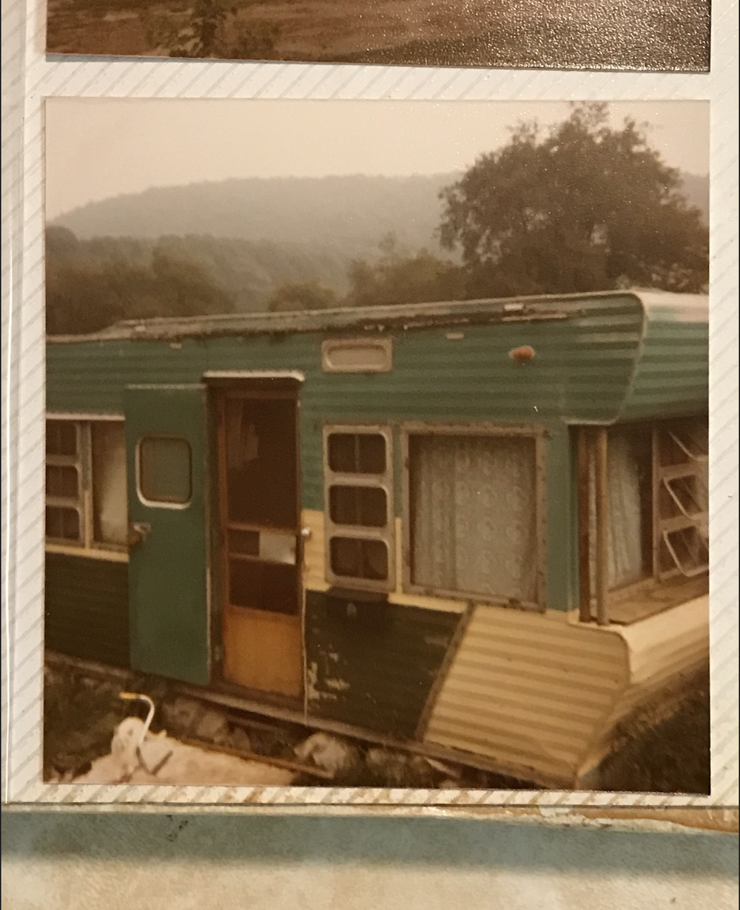

Bradley Stonesifer was raised in a small agrarian town in central Maryland, one of four children who spent his school days immersed equally in athletics and art. That upbringing shaped an eye that finds beauty in the ordinary — long before it was trained by a camera.
A Summa Cum Laude graduate of the Brooks Institute of Photography and a member of ICG Local 600, Bradley has spent more than 20 years behind the lens across narrative features, TV shows, feature documentary, and large-scale commercial work. His favorite kind of project is the one presented with a world of inconceivable challenges, always finding the beauty in the process. He credits Baraka and the Qatsi trilogy as an early influence — wordless, observational filmmaking that shaped how he thinks about image over dialogue.
His narrative work includes Kiss the Future (Official Selection, Berlinale), the Sundance titles Call Me Lucky, The Vicious Kind, and Me + Her, Bobcat Goldthwait’s God Bless America (Toronto & SXSW), the LAFF-winning documentary Fire on the Hill, and Dax Shepard’s Hit & Run, which played in over 3,000 theaters nationwide. On the commercial side, he’s shot for studios, networks, and brands including Microsoft, T-Mobile, Google, Samsung, Apple, Absolut, Fossil, and Subaru — lensing more than a dozen Super Bowl commercials for T-Mobile and Microsoft, and directing Microsoft’s 2024 Super Bowl campaign, “Watch Me,” for its Copilot AI platform.
He is also founder and partner of media[box] CAMERA in Culver City, a boutique camera equipment house serving the film and commercial community. He believes the strongest rules on a project come from the whole team, not just the director’s chair — once those rules are set, the film starts to find its own answers.
“Cinematography is selfishly me seeing the movie for the first time. Every take is a connection to a place, a time, a character, a moment.”
Off set, that same rural-meets-refined sensibility follows him — a bucolic, unhurried eye paired with a sophisticated, exacting craft. It’s an approach as comfortable on an indie feature as it is on a national ad campaign, always in service of the people and places in front of the lens.